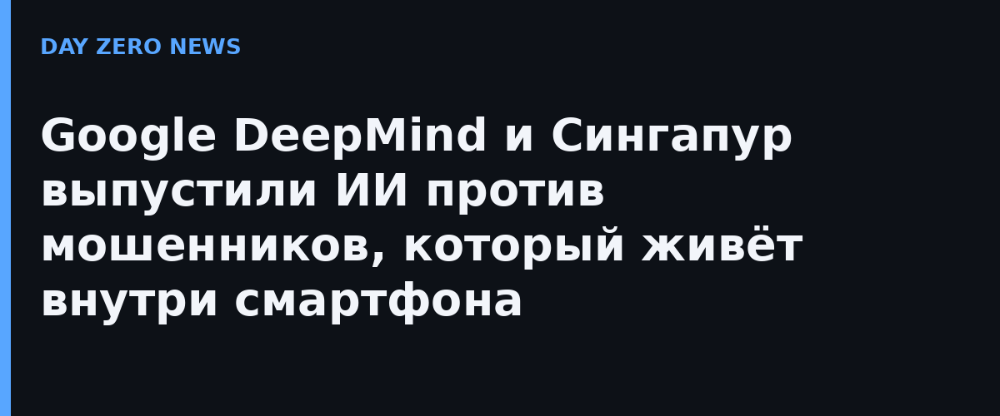

Google DeepMind и Агентство государственных технологий Сингапура (GovTech) представили модель обнаружения мошенничества на устройстве в рамках Singapore International Cyber Week. Повод серьёзный: в Сингапуре обман по телефону составляет больше половины зарегистрированных преступлений, а с 2019 года жители потеряли из-за мошенников более 4 млрд сингапурских долларов. До 80% потерь теперь приходится не на простой фишинг, а на сложную социальную инженерию — жертву «прогревают» долгим и убедительным разговором, прежде чем попросить деньги.
В основе — облегчённая модель Gemma, дообученная на локальных мошеннических диалогах: выдаче себя за госорганы, банки и публичных фигур, а также на региональных схемах, модных прямо сейчас. Работа разбита на две стадии, чтобы не посадить батарею: сначала экономный классификатор просеивает входящие сообщения, а при подозрении подключается Gemma — она разбирает снимок переписки и либо подтверждает угрозу, либо снимает ложную тревогу. Если модель замечает манипулятивные паттерны, телефон показывает предупреждение в реальном времени: не спешите отправлять деньги и сообщать коды.
Обычно угрозы ищут серверы, проверяя сообщения в облаке, но защищённые мессенджеры с end-to-end-шифрованием физически не могут этого сделать. Ставка DeepMind — перенести анализ в сам смартфон: сообщения не покидают устройство, а распознавание работает локально. Дообучали модель в «суверенной песочнице» в инфраструктуре Google Cloud под управлением GovTech; личные переписки в обучение не попали — только обезличенные наборы из отчётов о мошенничестве и данных о угрозах, а проверяли модель на синтетических диалогах.
Платформы обмена сообщениями и производители операционных систем смогут встроить лёгкую модель самостоятельно, защищая пользователей без раскрытия данных. Это заметный пример, когда правительство и крупная ИИ-лаборатория вместе вывели защитный ИИ на устройства граждан. Представители GovTech подчёркивают: борьба с мошенничеством не должна идти в ущерб приватности.